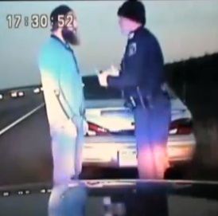

“They’re calling us murderers,” protests Adams County
Sheriff Ryan Zollman, referring to local residents and others who have
contacted his office to express their outrage over the
November 1nd killing of local rancher Jack Yantis by two of his
deputies. That appears to be the opinion of Rowdy Paradis, the only witness to
the shooting who has spoken about it publicly.
“They took a family man from the dinner table and
slaughtered him,” Paradis told the Idaho Statesman newspaper. At the time the fatal shots were fired,
Paradis was about ten feet away from the victim. Upon learning of her husband’s death, his wife Donna suffered a heart attack. She was taken to
Saint Alphonsus Hospital in Boise.
| Rest in God's peace: Jack Yantis. |

Yantis was not a criminal suspect
at the time of the shooting. Because he was killed by law enforcement officers,
however, the shooting – assuming that standard protocols will be followed by
the Idaho State Police – will be treated as a “suspected assault on law
enforcement.” This means that Yantis is, in effect, the suspect, and his
killers are considered the victims.
As we will shortly see, the ISP’s history
of investigating unlawful killings by fellow law enforcement officers strongly
suggests that the deputies will never face criminal charges, irrespective of
the facts – and that those facts will never be presented to the public without
adulteration.
Perhaps the most infuriating
aspect of this tragedy is the fact that Yantis was shot because he had
responded to a call for help from the same Sheriff’s Office whose personnel killed
him on the scene.
Yantis, a 62-year-old rancher from Council,
Idaho, received a call from the Adams County Sheriff’s Office on that Sunday
evening informing him that one of his bulls had been struck by a car on Highway
95. He arrived at the scene a few minutes later, armed with a rifle to put down
the wounded animal, which had turned aggressive and was threatening emergency
responders trying to treat two people injured in the collision.
Within
a few minutes, Yantis was dead – shot by the
still-unidentified deputies, who had been trying to contain the wounded animal.
The likeliest explanation is that the deputies, already frantic from dealing
with one ton of bovine menace, saw an armed Mundane and opened fire after their
“officer safety” instincts took control.

Significantly,
Sheriff Zollman – who, it must be said, was not on the scene, and was visibly
shaken when speaking to the media about the shooting – was among the “constitutional
sheriffs” who signed a declaration in early 2013 proclaiming their fidelity
to the Second Amendment, and their determination to interpose against federal
efforts to disarm law-abiding citizens within their respective jurisdictions. He
was also one of the four local sheriffs who convened a February 2013 public
meeting in Payette to rally support for the individual right to armed
self-defense.
However
noble his intentions might be regarding a theoretical federal gun-grab, the
sheriff may have needed to train his deputies not to surrender to panic at the
sight of a local resident carrying a firearm.
Zollman
describes Yantis as a well-known and widely respected figure in Adams County. “This
is going to be a big hit to this community he told Boise’s NBC affiliate, KTVB.
“The gentleman involved, Mr. Yantis, was a well-known cattle rancher around
here. It’s just a sad deal for everybody involved, for the whole community.”
The
fact that Yantis was on the scene following the accident says something about
his conscientious nature. Under Idaho
statutes
and court rulings, Yantis could not be held legally responsible for injuries or
damages resulting from the accident involving his bull: Since the accident took
place in a section of Adams County designated “open range,” livestock
and other domestic animals have unqualified right-of-way, and may roam freely
without their owners incurring liability.
Idaho
Code, Chapter 25 section 2118 states that “No person owning, or controlling
the possession of, any domestic animal running on open range, shall have the
duty to keep such animal off any highway on such range, and shall not be liable
to any vehicle or for injury to any person riding therein, caused by collision
between the vehicle and the animal.” In the 1999 case Adamson v.
Blanchard, the Idaho Supreme Court held that livestock owners enjoy
absolute immunity with respect to animals that wander onto public highways.
By
declining to exercise his absolute immunity, Yantis came within the lethal
range of state functionaries protected by “qualified immunity.” Yantis had an
obvious property interest in a bull worth a considerable amount of money. By
the time he learned of the accident, however, the animal had been lost; the
only reason he went to the scene was to help contain the bull and protect the
people it threatened, including the deputies who wound up killing him.

State-aligned
media outlets are playing their familiar role of producing a law
enforcement-friendly narrative: The Statesman referred to the killing as the
result of a “shootout,” and the
Oregonian referred to the incident as a “gun battle.” Both expressions
subtly imply that the Mundane bears the responsibility for his own death.
Sheriff
Zollman insists
that his department “takes matters involving any use of force very seriously
and we have requested detectives with the Idaho State Police to conduct the
investigation into this incident.” The deputies involved – one of whom
reportedly suffered an unspecified “minor injury” -- are on paid vacation. If
the fatal shooting had involved three hunters, rather than two deputies and a
rancher, the names of all three would now be public knowledge.
Yantis’s
family must call upon its own resources to deal with his death. The Sheriff’s
office is being attended to by a “crisis management team” and receiving
material support from the Idaho State Police – the same agency that is investigating
the shooting. The eventual outcome of that investigation is not a question that
should leave informed people burdened with suspense.
As
related in this space just a few months ago, the Idaho State Police is currently facing lawsuits from two troopers and one
former sergeant who claim to have faced official retaliation for refusing to
participate in an official cover-up in a previous law enforcement-related
fatality. ISP Corporals Quinn Carmack and Brandon Eller, along with former Sergeant Fred
Rice, were involved in the investigation of former Payette County Deputy Scott
Sloan, who killed 65-year-old New Plymouth resident Barry Johnson by plowing
his police vehicle into the side of Johnson’s jeep at an estimated speed of 115
miles per hour.
On
the basis of evidence produced by Carmack, Eller, and Rice, Sloan was fired by
Sheriff Chad Huff and charged with vehicular manslaughter by special prosecutor
Richard Linville. That case was sabotaged through the perjured testimony of ISP
Trooper Justin Klitch, who had secretly collaborated with Sloan while working
in the official investigation of his actions.
In
defiance of its own investigators, the ISP tried to craft a narrative blaming
Johnson for his own death by claiming that he was under the influence of
alcohol at the time of the October 18, 2011 crash. Even if his had been the
case, it wouldn’t explain why he was supposedly at fault when Deputy Sloan
crossed into the left lane, careening into the driver’s side of Johnson’s
vehicle as he was turning into his own driveway.
Carmack
and Eller, to their considerable credit, were determined to tell the truth as
dictated by the evidence, rather than the imperatives of Blue Privilege.
Following their testimony in an April 2012 preliminary hearing, Trooper Sam
Ketchum – who was in the courtroom as
the ISP’s zampolit, sent
a text message to Lt. Col. Ralph Powell (who is now ISP Director), complaining that Carmack and Eller had “laid us out” by
testifying truthfully, rather than endorsing the officially sanctioned fiction.
One
issue examined at that hearing was whether the original ISP report faulted
Sloan for “unsafe operation of an emergency vehicle.” In his surprise testimony
for the defense, Klitch perjured himself by denying that the phrase had been in
the original document. In a letter to the ISP written following the hearing,
prosecutor Linville pointed to an email in which Klitch – before the official
story had changed – “specifically requested” that the phrase be included in the
report, based on the available evidence.
Revising
his testimony to suit the official line was not the only favor Klitch did on
behalf of Sloan, and for his own superiors at the ISP.
“When
I initially asked Trooper Klitch to meet with me to discuss filing the case, he
made a recording of out meeting without my knowledge or consent,” Linville recalls. “I don’t know why Trooper
Klitch would make such a recording. His duty at the time was to present to me
all of the evidence he had collected regarding the Sloan case. He was meeting
with me to present evidence, not to create it.”
“Never
in my 25 years as a prosecuting attorney have I had a law enforcement officer
secretly record discussions during case preparation that are otherwise
privileged and protected work product, then hide the existence of such a
recording from me,” Linville protested.
Klitch’s
perjury earned him a place on the “Brady list” – a roster of law enforcement
officers whose testimony cannot be trusted in court. For testifying truthfully
in court, corporals Carmack and Eller were summoned by their ISP superiors and
told that “because of their testimony [they] could not be trusted….” Sgt. Rice,
who had conducted a professional and conscientious investigation, was
reprimanded for supposedly “withholding exculpatory evidence” – meaning that
his original report was later contradicted by Klitch’s perjured testimony.
Subjected
to a punitive transfer, Rice was told by his new supervisor that he was “not
being a team player” and that “he needed to stop more cars and write more
tickets and that if he did not make the changes it would be reflected in his
2013 evaluation.” Rice has since resigned from the ISP.
 |
| Klitch on road pirate patrol. |

The
perjurer Klitch, according to his supervisor, remains “a valued member of the
ISP” — despite the fact that his name is now inscribed on the “Brady list” and he
faces a growing collection of lawsuits by motorists who have suffered abuse at his hands in pretext stops conducted for the purpose of asset forfeiture.
Jackie
Raymond, the only surviving child of the man killed by Deputy Sloan, has filed a tort claim describing the ISP’s
behavior as that of a criminal “enterprise or conspiracy …[to] conceal
evidence, harbor and protect Sloan from criminal and civil liability, and
intimidate, influence, impede, deter, threaten, harass and obstruct witnesses …
to protect fellow Idaho law enforcement officers from the consequences of their
criminal misconduct.”
The
death of Jack Yantis may have been the product of tragic miscalculation,
misunderstanding, mishap, or culpable malice. Now that the investigation is in
the hands of a “criminal enterprise” with a documented history of suppressing
and misrepresenting evidence, it is doubtful that the public will ever learn
the unadorned truth of the matter.
"I saw them murder my husband"
Video Extra: "No, The Police Don't Work For You"
This week's Freedom Zealot Podcast deals with the politically charged "F-word":
If you can, please contribute to help keep Pro Libertate on-line. Thank you, and God bless.
Dum spiro, pugno!
47 comments:
Thanks for staying up on this and giving some backstory to those involved. Paragraph 16's first sentence needs a little attention: deal instead of death?
ISP is the real White Supremacist movement in Idaho.
This is bad journalism. It's equally possible that Yantis was agitated that the officers planned to shoot his bull and threatened the officers. In fact, that's the story I've heard from locals. You are maligning the cops without knowing the facts because you have an agenda.
when any group considers a perjurer as a 'friend' and believes truth tellers 'cannot be trusted', the adjectives 'criminal enterprise' as descriptors of that group applies quite well.
given the history of the ISP which is investigating the incident, it is my firm belief we, the people, will never, ever be truthfully informed with respect to what happened on Hwy 95 that resulted in the death of Mr. Yantis.
i do not intend to hold my breath waiting on the 'outcome' of the 'investigation'.
Mr. Anonymous, if you care to give me the details about the story you've supposedly heard from the locals, please contact me at WNGrigg [at] msn [dot] com.
Murder.
Fire all the retard deputies. The Sheriff is the only good guy on the force. Wouldn't be surprised if those deputies were plants, to destroy him, AND the town!
Find Rowdy Paradis account. They assaulted the old lady and threw her to the ground, then handcuffed her, after killing her husband before her eyes!
Depending on the outcome of the investigation, it might be time for old time frontier justice to occur, you know that "Unintentional Consequences".
This is BS, where is the cops camera footage? Its murder until the video comes out!!!!!!! This is not just going to go away, give us answers or else.
Wow, Anon, the story you "heard" surely must be more accurate than anything Mr Griggs is reporting. Just like the report I heard - that you're a cop-sucker - tried and true. Never met a cop you wouldn't drop to your knees and suck. That's your agenda.
No question, the cops are stressing out on how to get out from under this mess.
Let's look at how ISP deals with matters. A BSU football player was racing a drunk in a pick up on Hwy 55. The mustang the football player was driving had passed the pick up. A young man with his young wife and their 3 week old daughter were waiting in the center of the highway turn lane to enter the north bound lanes. The football player moved out of the south bound lanes to aim his mustang directly at the family, with the drunk in the pick up glued to the mustang's rear bumper. At the last second the football player cuts into the north bound lanes and the drunk plows his pick up into the family, killing them all. May God blessed the Perfects. The black box in the pick up showed the truck was doing 97 mph at the time of the crash. ISP took the case away or was giving the case to ISP by sheriff Raney, Ada county. ISP said, the football player may not have been speeding, what!!!! The football player said the whole event was road rage and the people in the pick up were throwing beer bottles/cans at his car. The police walked the roads and did not find one beer can or bottle, the football player lied about the road rage, they were racing and playing a deadly game. Both the football player and the drunk look to equally involved in the deaths of the Perfects. The drunk in the pick up will likely spend his life behind bars, the football player spent a very few days in the county jail and had to write the judge some kind of meaningless paper and that was it. The public was outraged and were they ever. But that didn't matter, there was an agenda and ISP got it done. The drunk was at fault for the death of the family and only him. The football player was at fault for not stopping at the crash, that's right, the football player saw the family get ripped to pieces in the crash. He called his girlfriend to tell her he just saw a bad crash that people likely died and kept on driving. This is only an overview of the details, it's far worse but the point that ISP shifted the blame is not a secret and ISP has a history of doing such. In fact, my hunch is the post about the locals may likely have come from someone involved in the ISP investigation. Justice Idaho style.
It is impossible for Yantis to have assaulted the officers. If he had, they would be dead.
I have known Jack for fifty years and have seen Jack in different moods from shear happiness to real anger and I cannot believe Jack threatened the deputies with a gun.I believe the deputies over reacted and shot him .I feel that the deputies failed to use proper communication in a deadly situation.
Hi Will,
Thanks for another excellent essay. On another topic, have you considered asking Lew Rockwell to post your articles with a "read the rest" button. Many of the essays published by his contributors have this feature. Perhaps it would direct more people to your own website. In addition, I often see links to your articles in the comments section of other websites that I frequent. However, they almost always link to Lew Rockwell, not freedom in our time.
Kind Regards,
Jeremy
"This is bad journalism. It's equally possible that Yantis was agitated that the officers planned to shoot his bull and threatened the officers. In fact, that's the story I've heard from locals. You are maligning the cops without knowing the facts because you have an agenda."
As a resident of Council, I find that SO SO SO SO SO hard to believe. I have not heard a single soul from my town say that Yantis went down to shoot the officers. Not a SINGLE one.
I like how most people thrive off of what they read and forget hiw the media controls any outcome. When they cannot even spell the sheriff name correctly. In every story by different sources it has been spelled incorrect. What is missing is people who knew the deceased. Did he have a temper? Was he an aggressor? What could have sparked the scene. And what were the people in the car doing? I have not heard one shred of positive ideas or both sides. And then everyone wonders why America is failing considering the amount of lemmings we house.
I hear all of you complain but not one logical sentence.
HI,
Another horror story - for the family and for Justice, quite possibly. Wasn't it Sherman (of March to the Sea fame, Civil War, War on civilians, scorched earth, good old USSA) that said "The first casualty in war is the Truth."
I wonder, based on your well-written narrative whether we will ever know the truth, this side of John chapter 8. "IF ye CONTINUE in My Word, THEN ye shall know the truth and the truth shall make you free."
So TRUTH is not first and foremost a "Correct fact," but a PERSON.
I do NOT need more in my INBOX, but could discern no way to get connected to your blog. If yo can connect me, go ahead.
I live way up North, as far on the West Side of the Idaho Panhandle as the roads go. Nordman, larrynordlewis@povn.com.
thank you very much,
-Larry Lewis
Anon's story about threatening the cops over killing bull makes no sense. Why? If the cops wanted the bull dead they would have killed it before the rancher arrived. They wouldn't have called him until after the bull was dead. The fact they called him to deal with the animal indicates they didn't intend to shoot the bull.
The police officers should be tried for murder if it turns out they over reacted. That being said, I find it hard to believe they just up and shot the man for no reason. Something must have happened to provoke deadly force.
Idaho Statesman has Mrs. Yantis and Rowdy Paradis' account.
It was MURDER!
Thank you for covering this Will! I hope this story along with the 6y/o in Louisiana being Murdred starts opening peoples eyes who are still able to see about the EVIL Government in this land now represents.
DEMOCIDE is not far away.
Who is "Mundane" ? this name appears twice in the story, but it's not explained who it is (unless I have missed something?) In both cases, the intent seems to be to refer to Mr Yantis.
Forgive me - I really should define "Mundane" and terms of art of that kind.
A "Mundane" is a common member of the productive class who doesn't enjoy the exalted status of our armed, costumed overseers, aka "The Only Ones" (as they are styled at The Truth About Guns) or "Exalted Ones," as they perceive themselves.
The outcome will likely be the actual investigation of the entire ISP for corruption.
Yeah, and OUT the murderers!
Ok as this was a tradic thing lets look at what is best for the Community. ! the Community needs to trust their sheriff and his deputies to understand that they are hired to be part of Law enforcement. I as a presiding member of the Constitutional Club and CSPOA would suggest that the county look at a grand jury formed not by law enforcement but by the people of that county.
The misnomer is that a judge leads the people in investigations through the Counties attorney when in fact the people have the power to arraign a jury of peers to ascertain the validity of the claims of both sides. More information?
Our whole law enforcement culture is perverted. An elected sheriff should investigate all crimes in his county, even if it involves his deputies.
If the ISP gets it wrong, will Zollman and his county attorney have the ISP and these deputies charged with crimes, or on the other hand, will the Yantis family be charged with lying and other crimes.
If elected officials continue to avoid their constitutional responsibilities by allowing un-elected so-called expert cops to make the final decision in cases like this- then we will never will recover our lost freedoms.
Zollman should have his investigation first and other agencies, if he chooses, should be under his strong direction including the ISP, Attorney General, FBI, etc.
I do not believe that Sheriff Huff has announced a decision in the Johnson accident. There is enough controversy on the Johnson death for Huff to investigate the ISP.
Are there any people who reject peer pressure? A sheriff should.
These comments are disturbing and uneducated. Comment when you have the facts from the investigation.
Lets take the facts as we know them:
The dispatcher is contacted by the police on Hwy. 95, with the bull to contact Mr. Yantis .
The dispatcher call Mr. Yantis about his bull.
Mr. Yantis has his nephew get the skip loader and a chain to meet him at the highway.
Mr. Yantis has his wife/sister get his rifle to take to him.
Mr. Yantis drives his 4 wheeler with the headlights on to the road. Just as he gets there the police are opening up on the bull.
Mr. Yantis stays back and waits until they are done. He has his nephew get the skip loader's lights on the bull.
Mr. Yantis, gets his rifle from his sister and or wife.
Mr. Yantis, walks up to the bull as the 2 policemen are talking to each other on the highway a matter of feet away from him.
Mr. Yantis, gets in behind the bull's head and lower his rifle within 2 feet of the bull's head to put it down.
A policeman comes up and grabs Mr. Yantis's arm at the shoulder and spins him around to face the other policeman who has his own rifle aimed and ready to shoot. That policeman shoots at once, once the other policeman spins Mr. Yantis around giving the shooter his profile.
Mr. Yantis, is first shot in the hand holding his rifle.
The other policeman, the one that jerked Mr. Yantis around giving the first shooter his profile, moves back away from Mr. Yantis and is pulling out his sidearm and both policemen open up on Mr. Yantis.
That is the way the witnesses saw this killing happen and the way the newspapers reported it.
An investigation includes facts from both the deputies involved and all witnesses present not just the family's account and the media's spin on it.
Anonymous @ 12:8 said:
An investigation includes facts from both the deputies involved and all witnesses present not just the family's account and the media's spin on it.
The media's "spin" on this incident has been typically sympathetic to law enforcement -- including the use of such tendentious expressions as "shootout" to describe an encounter that, from the available evidence, doesn't appear to be anything of the sort.
There is no reason to assume that the account offered by the killers in this incident would be more factual or reliable than the testimony offered by witnesses who didn't pull triggers. During last night's town hall meeting, Sheriff Zollman said that although the deputies had body cameras, and are required to turn them on, the devices weren't activated at the time of the shooting. The sheriff also claimed that he doesn't know -- more than a week after the fatal incident -- what has become of the footage collected by the single daschcam that was operating on the scene.
Given the ISP's demonstrated unreliability in carrying out investigations of officer-involved fatalities, there is abundant cause for reasonable people to believe that the official investigation of this matter will focus on exoneration, rather than full disclosure and accountability.
These developments from the Townhall meeting a disturbing but not surprising. Dash/body cams will NEVER be reliable when those they can incriminate control the content or lack of on those cameras.
"law" enFORCEment nationwide has become as untrustworthy as the governments they enFORCE for.
Lawlessness covers the USSA.
I am sorry for your loss, Yantis family. Thank you for the write up, Mr.Grigg. May Jack Yantis rest in peace.
Please excuse me for sticking my nose into this situation. I am just an impartial observer that read this story. I would be willing to bet that this rancher was a good ol' boy that didn't want to see any animal suffer.I say that because I just don't believe any man would bring both his wife,and his rifle along for the ride if he was going to pick a fight w/ the local authorities. But,if that 2nd to last comment was accurate, the 2 deputies had already put the animal down. I have to say that pulling out any weapons from that point on would be unnecessary, and ill advised for any civilians to do. That does not mean that anyone who does should be gunned down. Especially without verbal warning, while hes w/in arms reach of another deputy. The fact that the Cops partner was that close when the first shot was fired makes the shooter seem like he just did not belong in that situation. A hunting rifle in a gun fight should have afforded the man at least 1 verbal warning from an officer that has already drawn down on his target. I have yet to watch a police shooting video that didn't have a policeman shouting," Drop your weapon." befroe firing his. It might happen. Im just saying that I havent seen it happen yet, nor am I about to see it since out of 3 cameras at the scene, only 1 was turned on, and the footage from that one camera is now nowhere to be found. Did someone feel guilty about something they did. The dead man had nothing to hide. The "visibly shaken, Sheriff Zollen" picture doesnt look like a man that reached the fight, or flight adrenaline release point, then saved both he, and his partner from dying on in the line of duty. I understand that killing a man under any circumstances would be hard to deal with for most, but that is not whats on that guy is struggling w/in that picture. Its just a tough situation because it's all or nothing when there's an officer involved. Accidental, and negligible arent options once a paid professional draws his weapon. It would be nice to see justice prevail for Mrs. Yantis. She knows better than anyone what happened. After all she was just 10 ft away from the man that never would have put her in that kind of harm.
Thanks again for sharing your story.
So the answer to being "provoked" is to shoot first and cover up later? Cops are notorious throughout this twisted country for running amok and killing people. Somehow that bought and paid for costume they wear removes any sense of decency or restraint. It does however project some.sort of hypnotic effect over common dolts who bow down to authority structues as if on cue. Does Pavlov ring a bell?
Correction to you chris b. "The two deputies had already put the animal down". I never saw that, the bull was still very much alive after the cops shot it up. Jack Yantis was going to stop the bull's suffering. The reports make it clear, the bull was allowed to suffer for 2 hours until it at last died on its own, after Jack Yantis was murdered.
The clear facts in this matter show that cops don't have the simplest common sense to stop acting like goons and get a grip on the situation. No where in this situation was deadly force required. My Intel tells me that after the cops shot up the bull, Jack Yantis told the cops what idiots he thought they were. They resented that and from that point forward they seemingly were looking for a way to take the matter at hand to a new level. Seemingly they did just that and Jack Yantis is dead. Hundreds of cases are out there where cops egos having been insulted have resulted in deadly force being used. Did that happen in Jack Yantis's death? The facts point in that direction more all the time with what looks like all the cops cameras being turned off, time will tell.
Just wondering, who were the people in the car that hit the bull and where was their car. How much damage did that car receive, pictures? Way too much information is being tightly held to control and control what, truth?
An investigation includes facts from both the deputies involved and all witnesses present not just the family's account and the media's spin on it.
November 11, 2015 at 12:08 PM
Let's start with the body cams. Oh that's right they were not turned on as they should have been. Why were the cameras not turned on? To answer that question with what cops tell citizens all the time, "why not, what have you got to hide". That under SCOTUS ruling is probable cause to assume guilt which legalizes intervention. What the deputies have to say at this point can be totally disregard because they had their chance to make a statement but made a choice not to do so by turning their cameras off. At this point they can swear on a stack of Bibles and no logical person will or can believe them.
This looks very consistent with what i have read. If the Deputies are not Guilty, they need to come out publicly and say why they believe they had to both shoot the Rancher.
All comrades must retreat to the safespace and clutch their participation trophies while sipping juice boxes so these events never happen.
Mundane kulak taxable units on the glorious neo-feudal serf plantation utopia shouldn't have firearms, only police should have firearms so they can protect my safespace.
Ya, right. Yantis had his nephew.bring the front loader down because he knew he was going to have to dispatch his bull. If he was agitated, it was because the officers were target practicing already with a pistol on Jack's bull. If Jack did tell the officers to back off, are you so stupid that you think k that is justification to open fire and blow a decent, honest working family man away?
If you are in law enforcement, get out now as you are unqualified.
Should be a regulation that if an officer neglects to have cams active, instant termination. If cams are deactivated during an event culminating in civil action, the LEO that fails to produce video will be held automatically liable. Like an uninsured motorist is automatically held at fault in an accident.
"the 2 deputies had already put the animal down." Just because they shot the bull doesn't mean it was dead. I grew up on a cattle ranch and bulls are extremely tough to kill especially if you're only shooting it with handguns. A rifle shot to the head or a handgun shot through the eye (handgun shots can bounce off a bulls skull) are the only quick, sure ways to put down a bull. Shooting them anywhere else will likely only prolong the death of the animal. It's feasible to me that the rancher saw the bull was alive and suffering from multiple wounds and reacted quickly to put it down.
I believe his death should be investigated as either negligent homicide or manslaughter. The object lesson for us mundanes is never pull out a firearm around law enforcement without first obtaining everyone's notice and permission.
@ iakobos what we must do is dismiss every cop in the country who isn't aware or doesn't agree that a citizen's right to have/grasp/use a firearm at any moment is superior to his or hers. I don't disagree that it may be a good idea to make sure you're not surprising or alarming the cop by doing so unexpectedly, but if Yantis's rifle was pointed at the bull, the deputies had no right to object to Yantis putting it down. He certainly didn't need their permission. But they were offended, and apparently/allegedly murdered a man over their arrogance.
There are way too many cops in this country unsuited to the job, either because of cowardice that causes them to resort to force before it's legally AND morally AND ethically acceptable; or because they no longer consider themselves our servants but our superiors. Ever hear a cop say something about giving an order? We've forgotten that cops ability to give an order is limited to very specific circumstances.
Today is the 15th of January - roughly two and a half months after the shooting of Jack Yantis/
My question is where are the reports on the ISP and the FBI's investigations and when will that become public?
Today is Monday February 1st 2016. It has now been 3 months since the pigs murdered Jack Yantis and we still have NO answers. Why is the sheriff not reporting the "results" of his"investigation"? Why isn't the ISP reporting the results of their "investigation"? This is not a complicated scenario, we should have had answers before Christmas. The longer this takes, the more I am disinclined to believe anything the "authorities" attempt to sell us.
Post a Comment